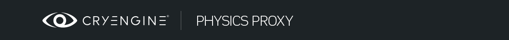
Обзор
Разделы
Физический прокси — это геометрия, которая используется для обнаружения столкновений. Он может быть частью видимой геометрии или связан с ней как отдельный узел. Обычно прокси-геометрия физики представляет собой упрощенную версию геометрии рендеринга, но также можно использовать геометрию рендеринга непосредственно для физики. Однако из соображений производительности геометрия столкновений должна быть как можно более простой, поскольку проверка пересечений сложной геометрии обходится очень дорого, особенно если это происходит часто. Физический прокси настраивается исключительно в инструменте DCC. Единственная настройка, необходимая в Sandbox, — это назначение типа поверхности.
Общая настройка в инструментах DCC
3ds Max
В 3ds Max вам необходимо назначить для прокси отдельный подматериал ID. Кроме того, убедитесь, что все лица вашего прокси находятся в первой группе сглаживания. Прокси физики настраивается в настройках шейдера в редакторе материалов 3ds Max. Физические свойства можно изменить только здесь, а не позже в Sandbox. Если вы хотите изменить настройки физики, вам необходимо повторно экспортировать объект. Физическая обработка включена с помощью флажка Физически в CryShader Физическая реализация панель. Если физикализация отключена, все сущности могут проходить через объект.
На снимке экрана ниже показан физический прокси, окружающий стандартную сетку рендеринга.
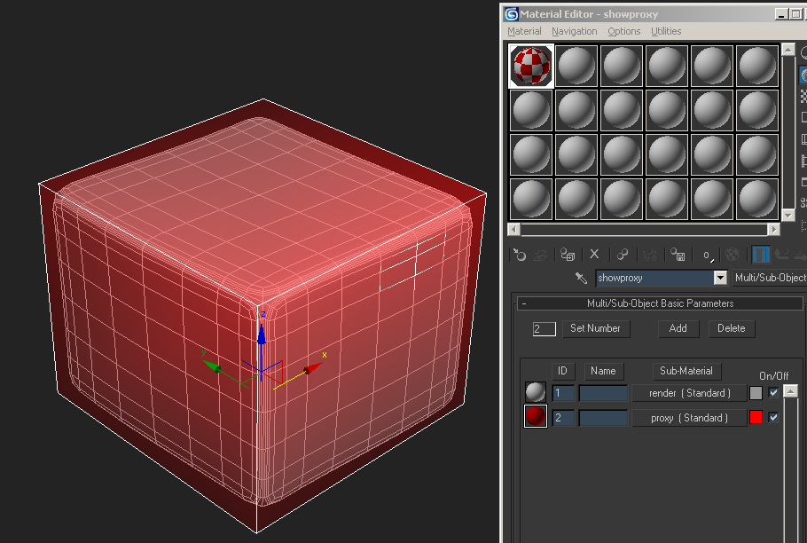
Использование примитивов
CRYENGINE автоматически попытается заменить физические прокси параметрическими примитивами, сравнивая геометрию прокси с поддерживаемыми формами примитивов и аппроксимируя потенциальный примитив в некоторых расчетных пределах. Форма создается вокруг общей ограничивающей рамки геометрии и использует исходную точку поворота, чтобы попытаться повернуть примитив так, чтобы он максимально соответствовал геометрии.
Примитивы намного более эффективны с точки зрения производительности, чем пользовательская геометрия столкновений (одна грань пользовательской геометрии стоит так же дорого, как и один примитив), поэтому важно использовать их как можно чаще.
Можно явно указать примитив коллизий, который следует использовать. В этом случае движок заменит физический прокси указанным примитивом. В 3ds Max примитив можно указать в Пользовательское свойство диалог узла. Доступны следующие примитивные теги:
- нефизический (используйте только с персонажами, у которых нет отдельного физического скелета).
- коробка.
- сфера.
- капсула.
- цилиндр.
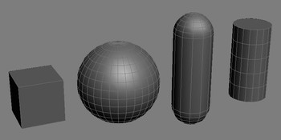
Коробка, сфера, капсула и цилиндр
Maya
1. Создайте группу под названием «cryexportnode_@», заменив «@» именем файла для экспорта.
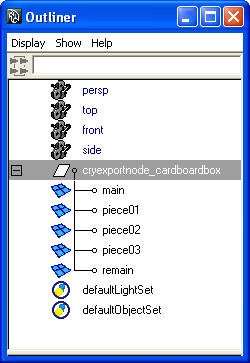
2. Создайте группу под именем «cryexportnode».
3. Назовите новую группу «#_group», заменив «#» именем модели, которую вы хотите экспортировать.
4. Сгруппируйте сетки в группу, созданную на шаге 3.
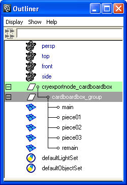
5. Сгруппируйте физическую сетку в группу, которую вы создали на шаге 3.
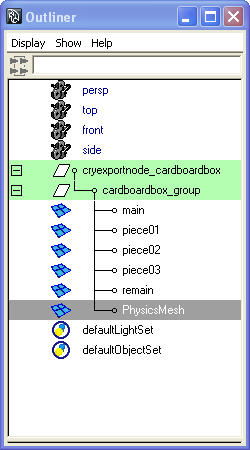
6. Создайте новый фоновый материал с именем «прокси».
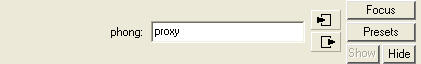
7. Назначьте новый материал физической сетке. 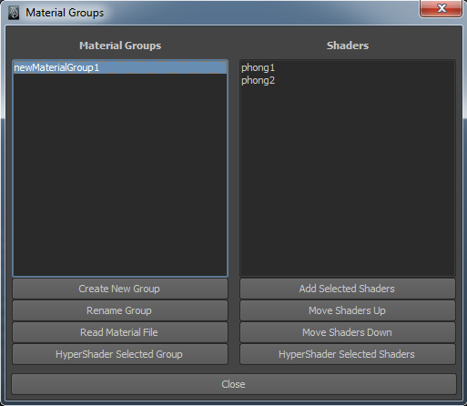
8. Обязательно добавьте свой материал в группу материалов вместе с остальными материалами.
9. Нажмите кнопку экспорта на панели инструментов «Crytek», чтобы открыть диалоговое окно «Экспорт в Crytek».
10. Нажмите кнопку «Добавить атрибуты».
11. Измените материал физического прокси и установите для его флага физикализации значение Прокси без розыгрыша
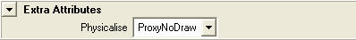
12. Выберите группу «cryexportnode».
13. Выберите тип файла из раскрывающегося списка, который появляется в разделе «Параметры узла». Вы также можете найти это раскрывающееся меню в разделе «Дополнительные атрибуты» редактора атрибутов Maya.
14. Обеспечьте Не объединять опция проверена.
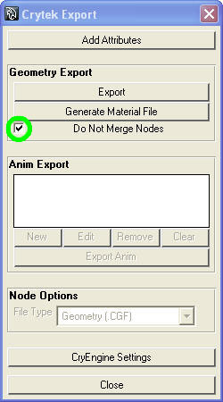
15. Нажмите кнопку Экспорт кнопку в диалоговом окне «Экспорт в Crytek».
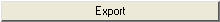
Пример сцены Maya с настройкой иерархии для экспорта геометрии static можно скачать. proxytest.mb.
Текущие разрешенные настройки прокси-сервера
Доступны следующие настройки физического прокси.
Значение | Взаимодействие сущности/игрока | Подробности |
|---|---|---|
По умолчанию (нет) | Сущности заблокированы | Геометрия рендеринга используется в качестве физического прокси. |
Физический прокси (NoDraw) | Сущности заблокированы | Сетка используется исключительно для обнаружения столкновений и не отображается. |
Нет столкновения | Сущности могут проходить через объект | Прокси специального назначения, который используется движком для обнаружения взаимодействия игрока (например, для изгиба касания растительности). |
Препятствовать | Сущности могут проходить через объект; AI Просмотр заблокирован | Используется для Мягкая обложка чтобы заблокировать обзор AI (т. е. на густую листву). |
Эти свойства присвоены материалам в каждом 3D-пакете:
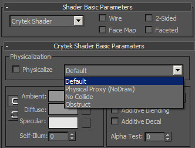
Material Editor в 3ds Max.
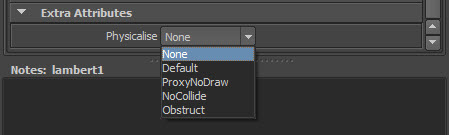
Вкладка «Дополнительные атрибуты» в редакторе атрибутов материала. NOTE: Этот атрибут необходимо добавить вручную с помощью кнопки «Добавить атрибут» экспортера..
Физический прокси не может иметь открытых краев. Открытые края могут сбить с толку физический движок и отрицательно повлиять на производительность. Полезно назначить прокси-серверу крайний цвет (например, ярко-красный), чтобы его отслеживать.
Уровень детализации настроек
Прокси создаются только для LOD0. Каждый последующий LOD автоматически берет прокси от LOD0. То же самое происходит, если используются другие настройки качества (например, Lowspec).
Сложность геометрии
Физические прокси объектов окружающей среды (заборы, ящики, контейнеры, деревья, камни, лестницы, лестницы и т. д.) должны быть максимально простыми.
Избегание геометрической сложности физических прокси важно для уменьшения избыточных требований к памяти и физических вычислений, а также для того, чтобы сделать движения игрока более плавными. Чем сложнее прокси, тем больше памяти он занимает и тем больше теряется производительность при проверке коллизий его полигонов. Это влияет как на одиночную игру, так и на мультиплеер, в том числе на производительность выделенного сервера. Помимо проблем с производительностью, сложный прокси с большой вогнутостью увеличивает вероятность того, что игрок застрянет или нежелательно отскочит от прокси.
Идеальный прокси всегда является примитивом (то есть коробкой, сферой, капсулой или цилиндром). CryENGINE распознает примитивы из сеток, но допуск по умолчанию очень низкий; Чтобы принудительно распознать, поместите соответствующее ключевое слово («коробка», «сфера» и т. д.) в определяемые пользователем свойства узла. Однако обратите внимание, что сетки с несколькими типами поверхностей нельзя превратить в примитивы. Примитивы следует рассматривать как вариант даже для более сложных объектов. В большинстве случаев предпочтительнее иметь составной объект (т. е. отключить «объединение узлов») с примитивными частями вместо объекта сетки из одной части.
Прокси используется для блокировки движения персонажа, а также для первого прохода отслеживания снарядов (пуль и декалей). Если попадание было обнаружено по физическому прокси, место попадания снаряда и декалей уточняется с помощью сетки рендеринга. Сетка рендеринга должна быть полностью инкапсулирована физическим прокси, чтобы камера игрока не пересекала геометрию рендеринга, а отсечение снаряда при первом проходе не пропускало физическую часть объекта, даже если он попадает в визуальную часть объекта. Также имеется поддержка создания специального прокси-сервера трассировки лучей, который, если он предусмотрен, будет использоваться для снарядов. Это позволит основному прокси-серверу не инкапсулировать сетку рендеринга, и, таким образом, прокси-сервер может быть еще проще.
Простые объекты, такие как ящики и заборы, обычно можно аппроксимировать простой коробкой, имеющей 6 сторон (12 треугольников). Верх лестницы обычно должен представлять собой простой пандус, в результате чего получается всего два треугольника. Более органичные объекты или объекты неправильной формы, такие как камни и деревья, по-прежнему можно аппроксимировать с помощью довольно простой оболочки, допуская небольшие и приемлемые неточности между сеткой рендеринга и физическим прокси.
Связывание объектов для упрощения экспорта
Прокси физики может быть частью объекта рендеринга (в 3ds Max как элемент) или отдельным объектом, связанным с объектом рендеринга.
Настройка в Sandbox
В Sandbox вам необходимо назначить тип поверхности вашему физическому прокси в Material Editor, а также вашей геометрии рендеринга. Тип поверхности дает информацию о звуке и эффектах частиц вашей поверхности.
Вам также необходимо назначить шейдер NoDraw в редакторе материалов. Убедитесь, что вашему прокси-подматериалу не назначены текстуры. Прокси физики никогда не будет отображаться в редакторе Sandbox без представления отладки. Даже если вы назначите шейдер освещения, он останется невидимым.
Чтобы перезагрузить физический прокси, вам необходимо перезагрузить объект, удалить его и отменить удаление.
Отладка
p_draw_helpers
Same as p_draw_helpers_num, but encoded in letters
Usage [Entity_Types]_[Helper_Types] - [t|s|r|R|l|i|g|a|y|e]_[g|c|b|l|t(#)]
Entity Types:
t - show terrain
s - show static entities
r - show sleeping rigid bodies
R - show active rigid bodies
l - show living entities
i - show independent entities
g - show triggers
a - show areas
y - show rays in RayWorldIntersection
e - show explosion occlusion maps
Helper Types
g - show geometry
c - show contact points
b - show bounding boxes
l - show tetrahedra lattices for breakable objects
j - show structural joints (will force translucency on the main geometry)
t(#) - show bounding volume trees up to the level #
f(#) - only show geometries with this bit flag set (multiple f's stack)
Example: p_draw_helpers larRis_g - show geometry for static, sleeping, active, independent entities and areas
Пример изображения без визуализации физического прокси:
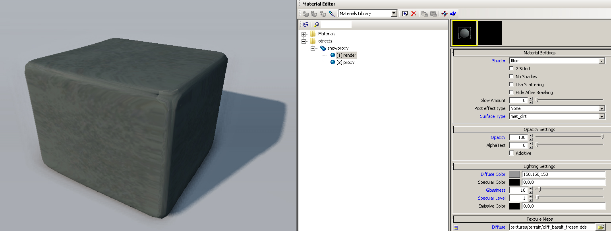
Тот же объект с визуализацией физического прокси:
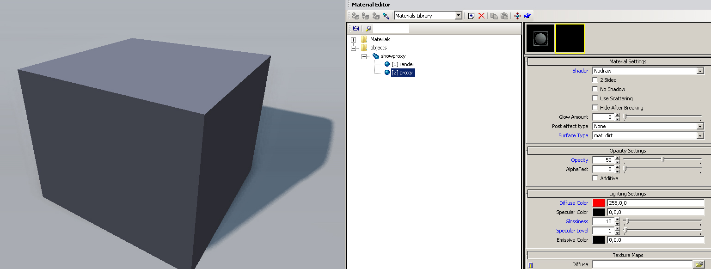
p_proxy_highlight_range
Changes the triangle count threshold of the physical debug view for marking proxies in red.
Usage: p_proxy_highlight_range [number]
Number - Any positive integer.
e_PhysProxyTriLimit
Maximum allowed triangle count for phys proxies
Если вы заметили, что ваши ресурсы окружены сообщением «Нет коллизий, слишком большой прокси!» тогда физический прокси для этого актива превышает количество треугольников, указанное в e_PhysProxyTriLimit.
Это будет выглядеть примерно так:
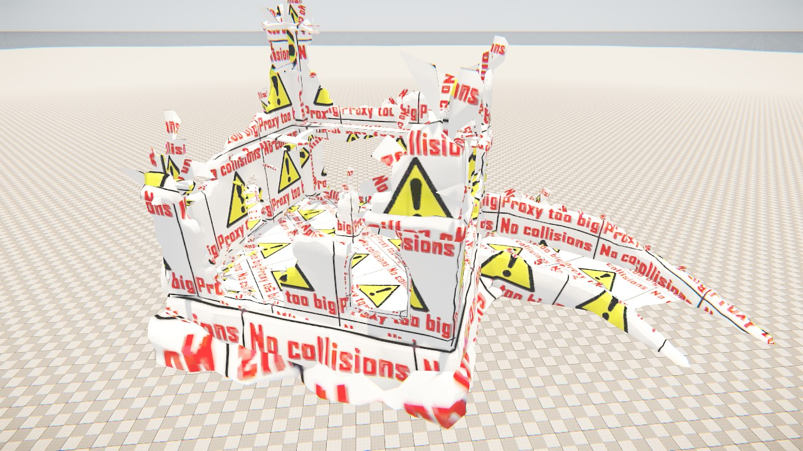